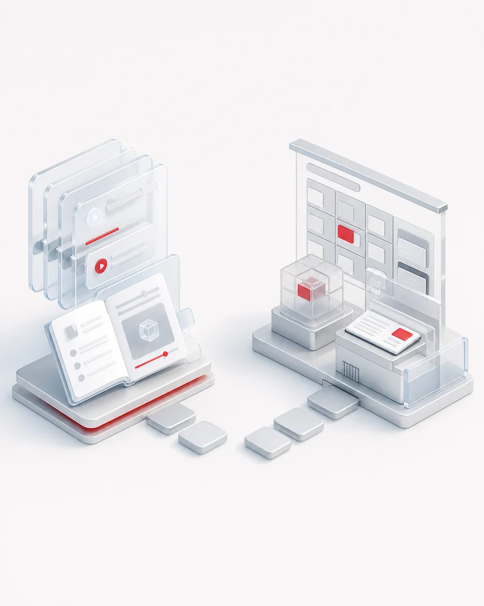
01
当前问题
课程与岗位脱节，学习后仍不会完成真实任务
只理解概念不足以形成应用能力，实战过程和成果评价同样重要。
以应用任务和项目实训为牵引，让学习者从理解 AI 走向会用工具、能开发应用、能完成项目。
从培养对象的基础和任务出发设计内容，通过练习、项目、复盘和展示完成能力迁移。

只理解概念不足以形成应用能力，实战过程和成果评价同样重要。
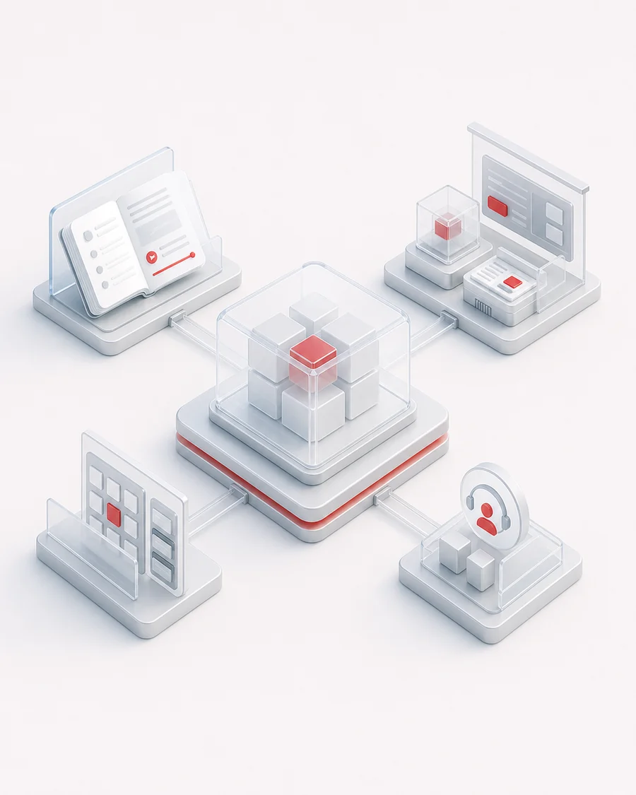
同步设计能力内容、培养路径、项目库、教学管理和支持服务。
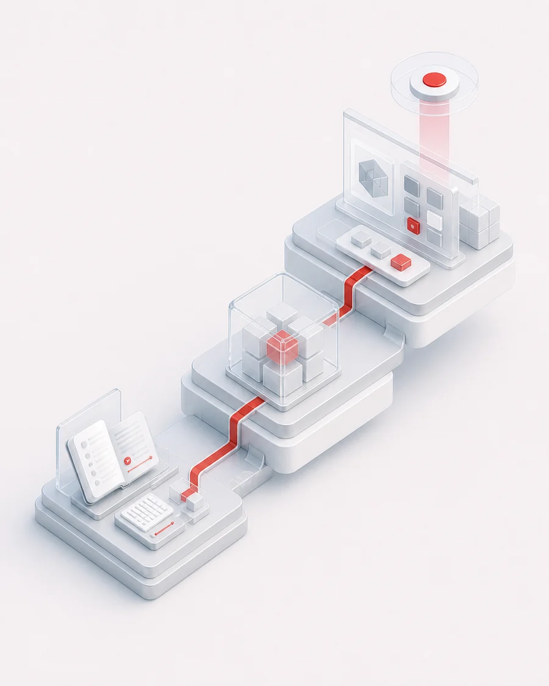
学习者能够使用 AI、开发应用并完成符合业务或岗位要求的项目。
培养目标按角色、基础和发展方向划分，不用同一套课程覆盖所有人。
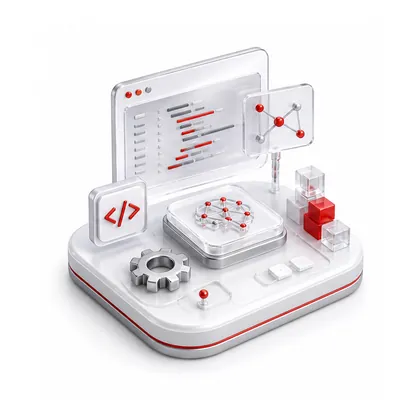
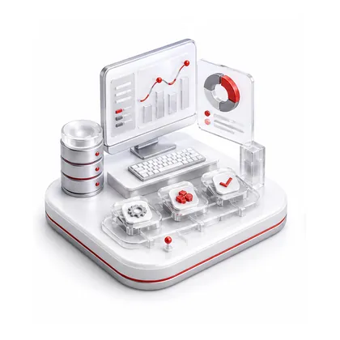
从基础认知到行业应用，逐步增加工具使用、开发工程与真实业务复杂度。
理解大模型、生成式 AI、提示词、数据与安全等基础知识。
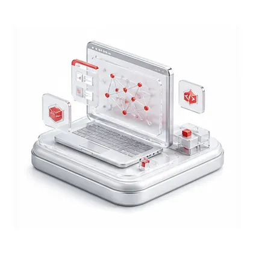
掌握工具调用、智能体构建、工作流编排与应用实现。
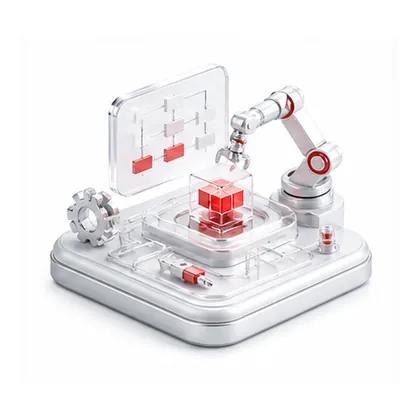
完成需求分析、方案设计、开发测试、部署与迭代。
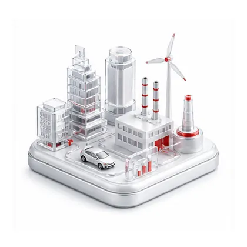
结合教育、企业与具体岗位场景完成项目实践。
路径可以按人群基础调整，但必须包含实践、反馈和成果展示。
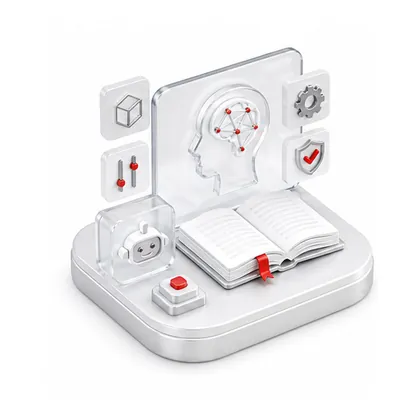
建立 AI 认知，掌握基础工具与安全边界。
围绕典型任务练习工具、提示词和应用开发。
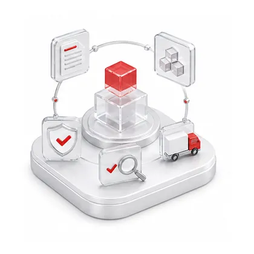
组队完成需求、设计、开发、测试与交付。
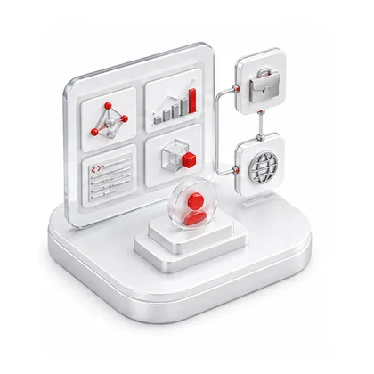
复盘项目成果，完成展示并连接岗位或业务应用。
课程之外还需要开发环境、教学管理、资源生态和持续服务。
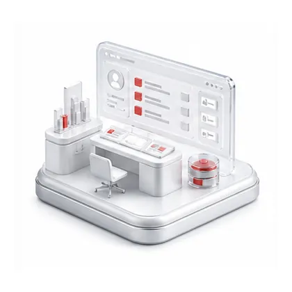
最终评价不只看是否完成课程，更关注能否完成任务、项目与岗位应用。
能够选择工具、设计提示并安全地完成日常任务。
能够构建智能体、工作流和场景化 AI 应用。
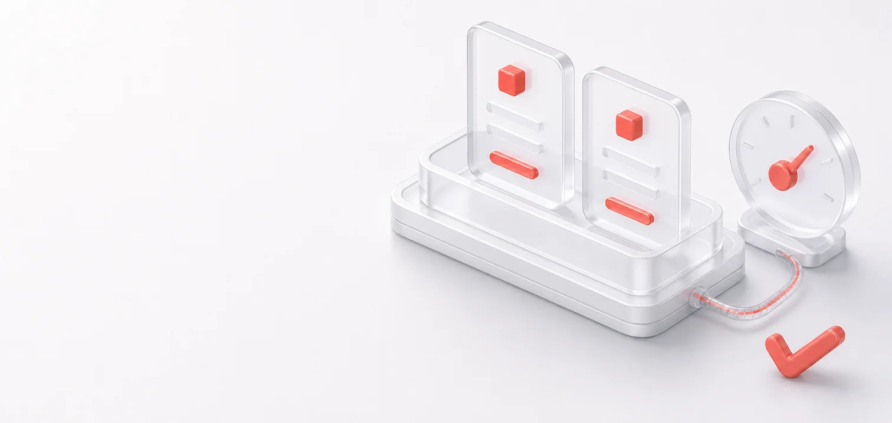
能够从需求分析推进到开发测试和成果交付。
将项目经验迁移到就业岗位或现有业务流程。
查看现有 AI 课程培训内容，或结合培养对象、能力目标和项目条件规划培养方案。